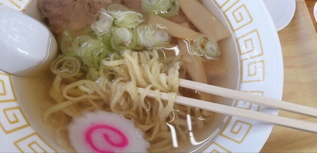
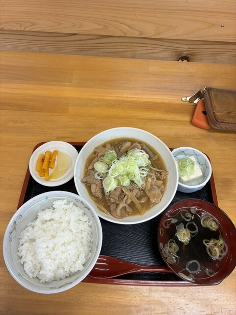
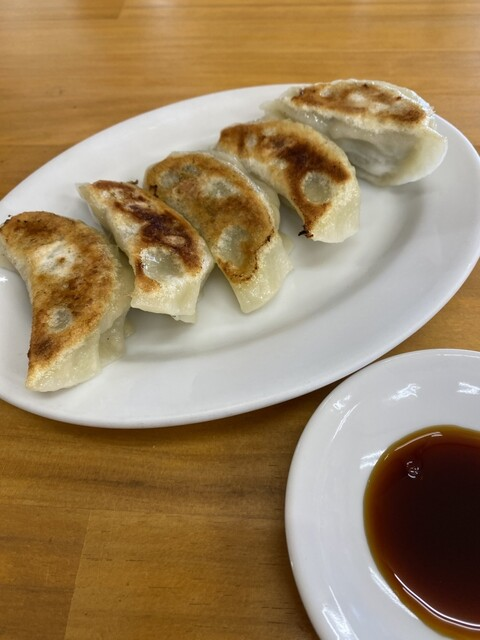
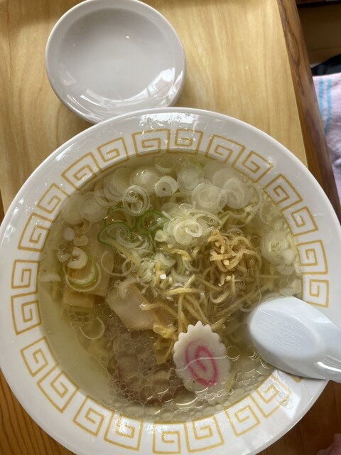
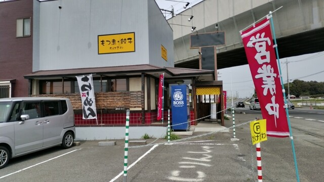
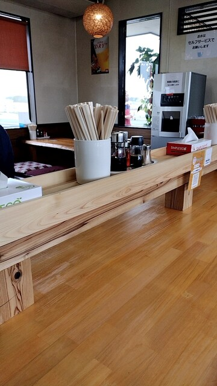
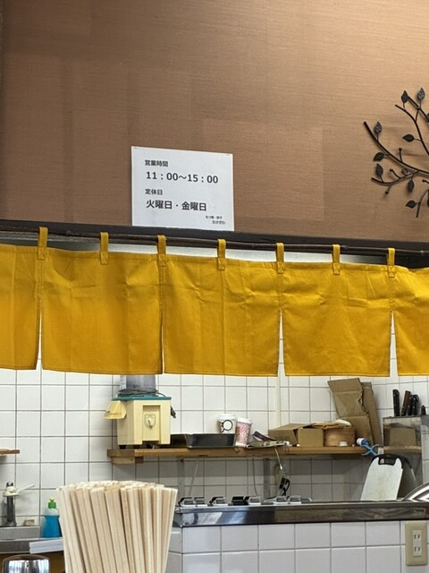
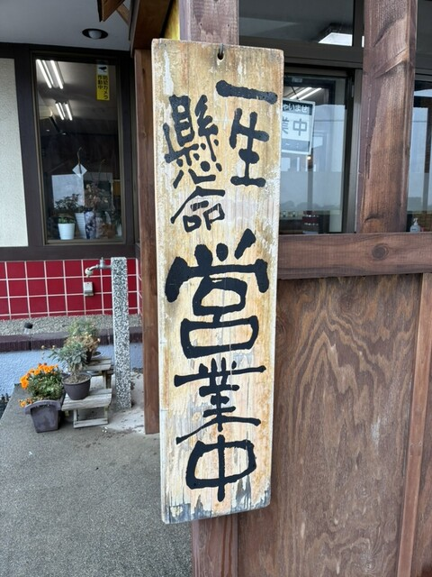
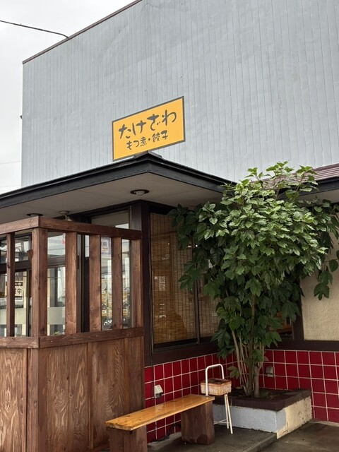
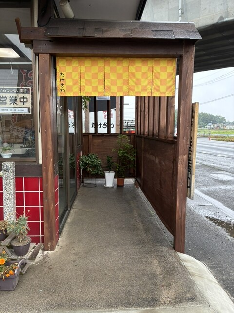

もつ煮・餃子・らーめん
週に五日、昼の四時間だけ。大山の一軒でお待ちしております。
11:00 — 15:00
火曜日・金曜日はお休みをいただいております。
お会計は現金のみで承っております。

01
もつ煮は、定食でも単品でもご注文いただけます。大盛のご用意もございます。

02
皮はぱりっと、焼き色までしっかりつけております。5個からご注文いただけます。

03
らーめんは、2025年4月からご用意しております。しょうがをきかせた一杯や、チャーシューをのせた一杯もお選びいただけます。
もつ煮と餃子は、お持ち帰りいただけます。店頭でお声がけください。
「らーめん、変わってなかった。麺、スープ美味しい。センギリ生姜。餃子はもともと美味しい。モツ煮定食。優しいお味。」
お客様の声より
「スープは魚介と動物系で丁度いい感じでとても美味しいです。麺は若干細めのピロピロ麺。」
お客様の声より






| 住所 | 〒306-0052 茨城県古河市大山959-16 |
|---|---|
| 電話 | 0280-33-7822 |
| 営業時間 | 11:00〜15:00（月・水・木・土・日） |
| 定休日 | 火曜日・金曜日 |
| お支払い | 現金のみ |
高架道路沿いの平屋です。黄色い看板が目印です。駐車スペースがございます。